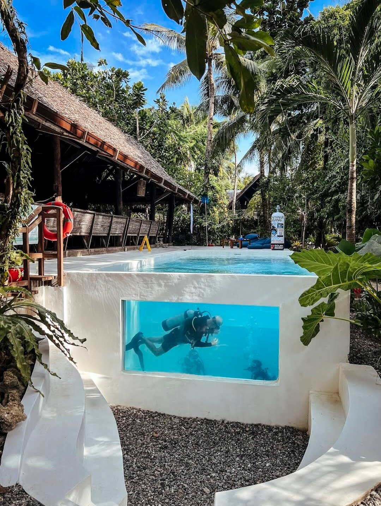

No experience needed · Ages 8+
Discover scuba diving in Siargao
Try Scuba in our glass-walled pool, or add two calm ocean dives with Basic Diver.
Two ways to try diving
If you've never dived, you can start with a pool session or go straight to the ocean with an instructor. Both need no experience, and both start in our glass-walled pool.
Try Scuba: ₱1,500
One pool session to feel what breathing underwater is like. A short briefing, then your instructor takes you into our glass-walled pool. Good for kids from age 8 and for anyone nervous about the ocean. Private session ₱3,000.
Basic Diver: ₱6,500
A morning in the pool, then two ocean dives to a maximum of 12 m. Age 10 and up. Private ₱10,000. If you continue within 6 months, it counts toward Scuba Diver or Open Water.
- 8:00 Pool session in our glass-walled pool.
- 9:00 The boat leaves, five divers at most per group.
- 9:30 Two calm ocean dives.
- 12:00 Back on land.
What comes next
Loved it? Go on to the Open Water course, or see all courses.
Try it with us
Tell us your dates and who is coming. Registration is one short form with a medical questionnaire, and a deposit secures your slot.
Discover scuba questions
What is the difference between Try Scuba and Basic Diver?
Try Scuba is one pool session, with no certification at the end. Basic Diver is a morning in the pool, then two calm ocean dives to a maximum of 12 m with your instructor beside you the whole time.
How old do I have to be?
Try Scuba is for ages 8 and up. Basic Diver is for ages 10 and up.
Do I need any experience?
No. You need to be fit to swim, and that is all.
Does it count toward a certification?
Basic Diver counts toward Scuba Diver or Open Water if you continue within 6 months. Try Scuba has no certification at the end, just the feeling.
What does it include?
All scuba gear, the boat and the marine fee.
What time does it start?
Basic Diver starts at 8:00 with the pool session. The boat leaves at 9:00 with five divers at most per group, and you are back on land around 12:00.
See you on the boat.
Message us with your dates and what you'd like to do. We usually reply on WhatsApp within minutes.